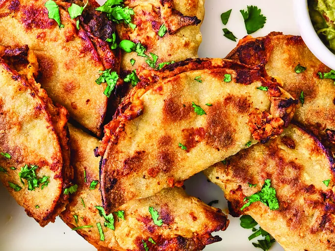

Pan Tacos

Descpricion
Estos tacos en bandeja son realmente los más fáciles que jamás prepararás. Asarlos a alta temperatura los deja crujientes y dorados, y el relleno de carne no necesita precocción. Pruébalos, te sorprenderán. Cúbrelos con tus ingredientes favoritos para tacos.
ingredientes
- 2 cucharadas de aceite de oliva , y más si es necesario
- 1 libra de carne molida
- 1/4 taza de cebolla finamente picada
- 4 onzas de chiles verdes picados
- 1 cucharadita de chile en polvo
- 1/2 cucharadita de comino molido
- 1/4 cucharadita de ajo en polvo
- 3/4 cucharadita de sal kosher
- 10 tortillas de maíz
- 1 taza de frijoles refritos (opcional)
- 1 taza de queso cheddar rallado
- Aderezos: cilantro, crema agria, salsa, guacamole o salsa picante (opcional
Pasos
- Precalienta el horno a 220 °C (425 °F). Cubre una bandeja para hornear con borde con papel aluminio o papel vegetal y cúbrela ligeramente con una cucharada de aceite de oliva.
- Combine la carne, la cebolla, los chiles verdes, el chile en polvo, el comino, el ajo en polvo y la sal en un tazón mediano y mezcle hasta que estén bien incorporados.
- Envuelva las tortillas en una toalla de papel húmeda y caliéntelas en el microondas hasta que se ablanden, aproximadamente 30 segundos.
- :Unte unas 3 cucharadas de la mezcla de carne sobre la mitad de una tortilla formando una capa muy fina que llegue hasta los bordes. Unte una cucharada de frijoles sobre la otra mitad. Espolvoree con unas 2 cucharadas de queso. Doble la tortilla por la mitad para formar un taco; colóquela en una bandeja para hornear preparada. Repita con las tortillas restantes, la carne y el queso. Unte la parte superior de los tacos con el aceite restante.
- Hornee los tacos en el horno precalentado, dándoles la vuelta a la mitad del tiempo, hasta que estén ligeramente dorados, tostados y crujientes por los bordes, de 30 a 35 minutos. Sírvalos con los ingredientes que desee
Home